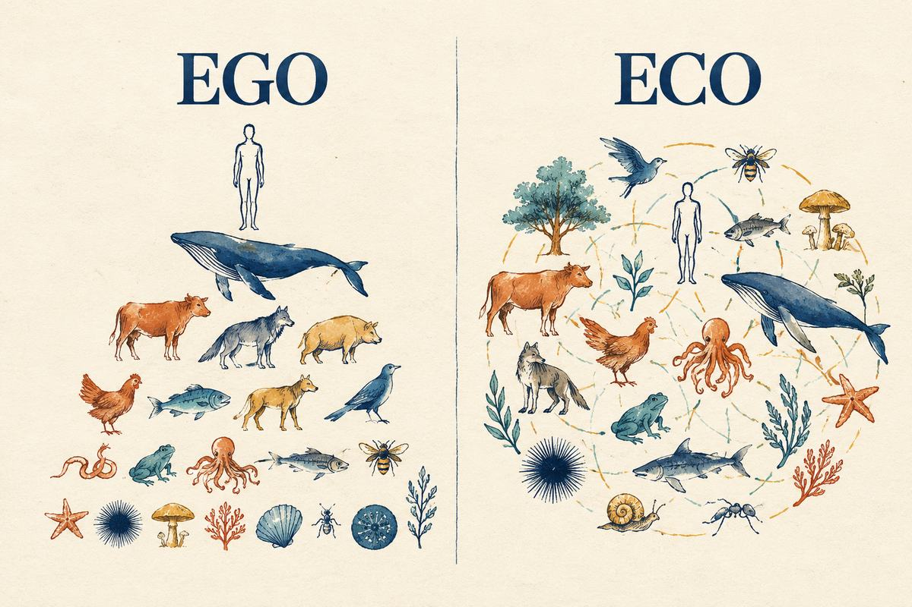

חכמת רבים
אף אחד לא רואה את כל התמונה. כשאנשים שונים משתפים במה שהם יודעים, יכולה לצמוח הבנה שאף אחד מהם לא היה מגיע אליה לבד.
השיטה · The Ecosystemic Flâneur
אנחנו לא הולכים לאיבוד רק כדי לאבד את הדרך. אנחנו משחררים לזמן מה את הצורך לדעת, לשלוט ולתכנן הכול מראש, כדי לפגוש את מה שלא יכולנו לצפות.
יוצאים מא׳ אל ב׳, ומה שמשמעותי הוא לעיתים ג׳. השוטטות יוצרת תנאים לגלות את ג׳. זו לא הבטחה, וזה גם לא ויתור על תכנון.

01 · מיהו המשוטט
השורש הוא התזה מ-2007, "המשוטט העירוני ככלי למחקר עירוני". המושג המרכזי בה הוא "גישה מבחינה", ומתוכו צמח "המשוטט המבחין".
מהפלאנר ככלי מחקר, דרך סדנאות "הזמנה ללכת לאיבוד" בתל אביב (2014–2015), השיטה התפתחה לפרקטיקה אישית, חינוכית, קבוצתית וקהילתית.
02 · היסודות



שש הנחות היסוד של Art of Hosting הן מקור שאנחנו משוחחים איתו, בנפרד מחמש התובנות. לשש ההנחות, בעמוד השיטה המלא
03 · השיטה
זה לא נוהל לינארי קשיח. מהחגיגה חוזרים אל הערך, בהבנה שהשתנתה.
04 · תובנות שלנו
אלה לא צווים. הם כיוונים לקשב, לשיקול דעת ולפעולה בעולם חי ומקושר. במרכז, מידת האמצע.
אף אחד לא רואה את כל התמונה. כשאנשים שונים משתפים במה שהם יודעים, יכולה לצמוח הבנה שאף אחד מהם לא היה מגיע אליה לבד.
מגוון של אנשים, מינים, נקודות מבט ודרכי ידיעה נותן למערכת חיה עושר, יכולת הסתגלות ואפשרויות.
לזהות את המידה הנכונה, בלי לצבור, לצרוך או לקחת יותר ממה שצריך. זו לא בינוניות ולא פשרה אוטומטית, אלא שיקול דעת בכל מצב.
להקשיב זה להכיר בכך שנקודת המבט שלנו חלקית. כשמקשיבים לאחרים, למקום, לטבע ולמה שעוד לא מבינים, לומדים את מה שלא נראה מנקודת מבט אחת.
לפני שמחפשים עוד, לשים לב למה שכבר כאן ולהוקיר אותו: אנשים, קשרים, מקומות והזדמנויות.
05 · שוטטות ומקום
אנחנו לא יחידים נפרדים בעולם של חפצים נפרדים ומשאבים בלי סוף. אנחנו חלק מרשת חיה של קשרים, תלויים בה, תורמים לה ומושפעים מהתנאים שמקיימים אותה.
מכאן השאלה משתנה: לא רק איך להשיג עוד, אלא איך לחיות ולפעול בדרך שמכירה בתלות ההדדית ושומרת על התנאים לחיים.
אותן שבע תנועות מתבטאות בשוטטות אישית, מפגש של אדם עם מקום, ובשוטטות משתתפת, תהליך מונחה של קבוצה או קהילה.